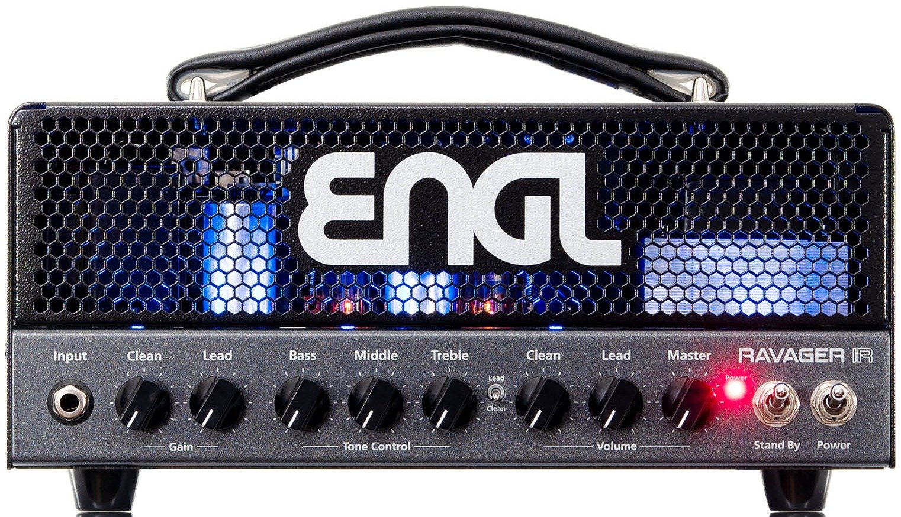
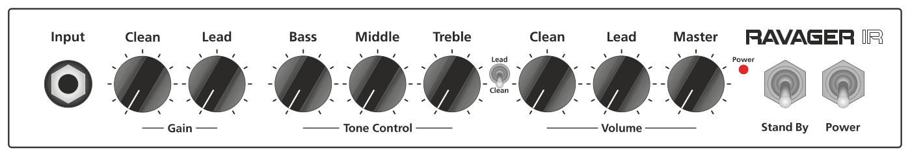
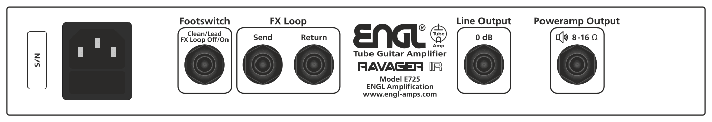

E725 Ravager IR
Operator’s Manual

Front Panel

Input
Input (conventional 6.3mm / ¼" TS) unbalanced input. Plug your guitar in here, using a shielded cord.
Clean Gain
Gain control for the Clean channel.
Lead Gain
Gain control for the Lead channel.
Bass
Bottom end voicing control of the preamp’s passive EQ.
Middle
Mid-range voicing control of the preamp’s passive EQ.
Treble
Upper range voicing control of the preamp’s passive EQ.
Clean Volume
Volume control for the Clean channel (pre-FX Loop, influences the send level).
Lead Volume
Volume control for the Lead channel (pre-FX Loop, influences the send level).
Master
Master volume knob. Located post-FX Loop, it controls power amp output.
Clean/Lead Channel
Use this switch to toggle between the Clean and the Lead channel. This feature can also be controlled via a connected ENGL Z4 (TRS) footswitch.
Stand By
Use this switch to silence the amp when you take a longer break. The amp’s tubes stay nice and toasty, and the amp is ready to roll immediately when you ramp it back up to full power. The Stand By switch is also well-suited for muting the amp for brief breaks, for instance when you are switching guitars.
Power
Mains power on/off.
Please note: ensure that the Stand By switch is set to Stand By before you switch the amp on. Let the tubes heat up for about 30 seconds before you activate the power amp. This procedure spares the tubes.
Rear Panel
![The upper rear panel, left to right: the mains type plate, carrying a bilingual fire-and-shock caution and a table reading VOLTAGE 100–120 V, FUSE 0.8 ATL and VOLTAGE 220–240 V, FUSE 0.4 ATL, MAINS frequency 50–60 Hz, max. power consumption approx. 80 Watts, and REPLACE THE MAINS FUSE ONLY WITH SAME TYPE AND RATING; the POWER SOAK rotary Power Range Selector with the positions Full Power, Mid Power, Low Power and Speaker Off; the IR Selector rotary marked 1 to 4, legended 1 = ENGL E412XXL, numbers 2 to 4 reserved for your own cabinet IRs; the USB socket for IR loading; the headphone jack with its Level and Output knobs; the IR Balanced Output XLR with a Ground switch offering Ground, Ground Lifted and Ground To Pin 1; and a caution reading HOT SURFACE, DO NOT TOUCH.](Images/rear-panel-power-ir.png)
Power Range Selector
Use this switch to activate the Power Soak and select the desired power level.
- Full Power (approx. 20 Watts)
- Mid Power (approx. 5 Watts)
- Low Power (approx. 1 Watt)
- Speaker Off* (zero Watts)
*In this position no speaker load has to be connected to the Poweramp Output.
When activated, the Power Soak’s resistors convert some or all of the power amp’s output into heat. So, make sure air can circulate freely around the back of the amp!
IR Selector
This rotary switch allows you to select between four different IRs. The first one is a built-in ENGL IR (ENGL E412XXL, V30); the other three can be loaded via USB.
When selecting an unused or let’s say free slot, the IR section is bypassed automatically.
USB
Connect the amp to a computer to drag and drop your impulse response files. Impulse responses will be stored in alphabetical sequence to the slots 2 to 4.
This is how it works:
- Connect the amp via a USB-B cable with your computer.
- Power the amp up and wait until the internal memory “ENGL” is recognized and ready.
- Now you can drag and drop the desired IR to the amps internal memory.
- When done, [Safely Remove Hardware] and disconnect the amp from the computer.
- “Reboot” the amp (turn the amp off, wait about 10 seconds and turn it on again).
- Now the loaded IR is ready to use.
Supported IR Files
Files in mono up to a maximum size of 128kB / 96kHz (1 second @ 48kHz; 500ms @ 96kHz). The saved files are automatically assigned to the IR selector switch (2 to 4) in alphanumeric order. If the files are outside of these specifications, they cannot be read and processed.
NOTE: In case the IRs are too long, you can use the IR converter at the ENGL amps website.
IR Balanced Output
The balanced XLR output carrying the signal of the selected IR, for a mixing desk or recording interface.
Headphone Output
Connect a headphone (3.5mm / 1/8" TRS) for easy monitoring or practice. When selecting the Power Soak “Speaker Off” position you can practice without disturbing your neighbours.
CAUTION! When powering the amp up, upcoming noise can appear and damage hearing. Make sure to remove the headphones while powering the device up.
Headphone Level
Adjusts the level of the Headphone output.
XLR – Ground
Toggle this switch for ground or ground lifted. Push this switch when you recognize upcoming ground loop noise.

Main Supply Connector (AC Power Inlet, IEC – C14 connector)
Plug the mains cord in here.
CAUTION! Make sure you use an intact mains line cord with a grounded plug! Before you power the amp up, ensure the voltage value (e.g. printed on the Type Label or alongside the mains port) is the same as the current of the local power supply or wall outlet. Please also heed the guidelines set forth in the separately included pamphlet, Instructions for the Prevention of Fire, Electrical Shock and Injury.
Mains Fuse Box
The rear chamber contains the mains fuse and the front chamber a spare fuse.
NOTE: Ensure replacement fuses bear identical ratings (refer to the technical data)!
CAUTION! Always make sure replacement fuses are of the same type and have the same ratings as the original fuse! To this end, please refer to the fuse ratings shown on the type panel.
Footswitch
Clean/Lead and FX Loop (conventional 6.3mm / ¼" TRS). Use this jack to connect a conventional footswitch with two switching functions, i.e. the ENGL Z4 (2 x off/on – Single Pole Single Throw or SPST for short).
Tip: switching between the Clean and the Lead channel.
Ring: switching the FX Loop on and off.
Default (no footswitch connected): Clean channel is activated, FX Loop is on.
FX Loop
In the signal path, the FX Loop is located post preamp and before the power amp Master controls.
FX Loop Send
Connect the FX Loop Send (output) to a signal processor’s input or an effect pedal’s input/return jack using the shortest possible shielded cord (conventional 6.3mm / ¼" TS).
FX Loop Return
Connect the FX Loop Return (input) to a signal processor’s output or an effect pedal’s output/send jack using the shortest possible shielded cord (conventional 6.3mm / ¼" TS).
Line Output – 0 dB
The Line Output port taps the power amp’s output to provide a line out signal configured at a level of about 0dB. The frequency response is identical to the power amp output signal. In other words, its frequency response is not compensated or corrected. You can feed this signal to another linear power amp. Another option is to patch it through an outboard filter to emulate a speaker, or for example into the ENGL CABLOADER (IR-Loader with an integrated microphone and power amp simulation), and feed this externally processed signal to a recording device or PA system.
Poweramp Output
One cabinet can be connected to the 8 – 16 Ohm jack; you can use an 8 Ohm cabinet or a 16 Ohm cabinet.
Important Note: We cannot stress enough the importance of proper impedance matching when connecting a cabinet to your amp. Impedance mismatching can damage the poweramp! Always check the connected cabinet’s impedance to confirm it matches the amp’s output impedance!
Technical Data
| Output power | approx. 20 Watts max |
|---|---|
| Input sensitivity | |
| Input | from -20 dB to approx. 0 dB max. |
| FX Return | from -20 dB to approx. 0 dB max. |
| Output level | |
| FX SEND | from -20 dB to approx. 0 dB max. |
| XLR, Headphone | approx. 0 dB at nominal power output |
| Power consumption | approx. 80 Watts (95 VA) max. |
| Fuses | |
| 220 / 230 / 240 supply voltage | 0.4 A (Time-Lag T) |
| 100 / 110 / 120 supply voltage | 0.8 A (Time-Lag T) |
| Power Tube Fuses |
2 x 100mA (Time-Lag T) Recommended: Littelfuse – 0218.100HXP, Schurter – 0034.3107 |
| Tubes | |
| V1 / V2 | ENGL ECC83 Selected (S) |
| V3 / V4 | ENGL EL84 Hand-matched Duet |
| Dimensions |
30.5cm x 16.5cm x 19.5cm 12.00in x 6.51in x 7.67in |
| Weight | approx. 6.1kg / 13.4 lbs |
Important: Replace the power tube fuses with fuses of the same type and rating only!
A Few Comments on Tube Amplifiers
Be sure to read this section before powering the amp up!
This amp’s input is extremely sensitive due to its high gain factor. In combination with inherent microphonics of tubes, at certain settings this can elicit powerful feedback from the speakers – even without a guitar being connected!
This occurs primarily when the Lead channel (whose preamp is easily overdriven) is activated and the following settings are dialed in:
- Clean Gain and / or Lead Gain knob past the 12 o’clock position
- Treble knob past the 12 o’clock position
- Clean / Lead Volume knob past the 12 o’clock position
Avoid setting the aforementioned knobs to extreme positions (that is, combinations in which several of these knobs are set past the 12 o’clock position). This type of configuration can cause considerable feedback that could severely damage your hearing and destroy speakers.
If you set the Volume or Master knobs to higher volume levels, always make sure to back off amplification levels to prevent feedback by turning the Lead channel Gain knob down. The same applies to that channel’s Treble setting.
Before you power the amp up, take a moment to check out the control panel and make sure that these knobs are not set to any configuration similar to the one described above!
A Few Words on Background Noise in Tube Amplifiers
You may hear slight background noise right after you power a tube amp up or even while you are operating. It manifests as intermittent hissing or sizzling, crackling, or popping noises. Caused by tubes, this type of noise may even occur with brand new tubes.
The noise is particularly noticeable in the high-gain Lead channel. This is because the Lead channel provides a very high gain factor, amplifying noise along with the usable guitar signal.
It is not necessary to swap tubes if you encounter this kind of noise every now and then, though you may consider replacing tubes if it becomes a constant companion.
Troubleshooting
The output volume fluctuates or drops
- Take all effect devices (in front of the preamp and FX Loop) out of the signal chain.
- Check all used cables.
- Check the used guitar or use another guitar.
- Use a patch or guitar cable to patch the FX Send with the FX Return jack.
- Try using an external and functional power amp with the preamp of the amp (FX Send connected to an external power amp) to exclude a problem with the amp’s internal preamp.
- Try using an external and functional preamp with the poweramp of the amp (FX Return connected to an external preamp) to exclude a problem with the amp’s poweramp.
The amp is not providing a proper output signal / no or low sound is emanating from the speaker
- Is a speaker connected to the speaker output?
- Is the power amp activated (Stand By switch out of the Stand By position)?
- Are all cords (guitar, effects and speaker) connected properly and are they functional?
- Take all effect devices (before the preamp, FX Loop) out of the signal chain.
- Is the Noise Gate activated? (Relevant only, if the amplifier is equipped with a Noise Gate).
- Are the Master knob and the Gain and Volume knobs set to a value higher than 0? If any of these knobs is set to zero, no signal is routed to the amp’s output.
The speaker is emitting humming noises
- The amp and mains ground are not connected properly or are altogether disconnected. Please have this checked by a technician.
- Cords connected to the input or FX Loop may not be shielded properly. Replace them to check if this is indeed the case.
- The amp or speaker cords may be picking up interference from powerful magnetic fields (i.e., of nearby power transformers or electrical motors). Reposition the amp and connector cables.
- The amp or speaker cords may be picking up radio signals. For example, from activated mobile phones or powerful local transmitting stations nearby. Switch off mobile phones while troubleshooting noise problems.
Service
Please contact us via e-mail: service@engl-amps.com before shipping a product to us. The more precise the error description is, the better our service team can help you. It is best to send us a photo of the control settings and a video recording. A detailed description of the error also helps us to isolate and locate the problem faster.
- Which channels are affected?
- Which functions are activated?
- In which knob positions does the problem occur?
- Are you using effects devices before the input or in the FX-Loop?
- Does the problem occur in standby mode (noise issues)?
- What equipment is used in detail?
Packaging
Please make sure to use suitable packaging to ensure undamaged transport (use original PKG). To unfold the full protective function of the packaging, the outer packaging, the device and the inner packaging must form a single unit. This is the only way to ensure that the device survives the transport route undamaged.
Please check used packaging for tears, signs of compression, pressure marks, perforations or other damage before use. Please do not use damaged packaging. Note that a flight case is not a suitable shipping packaging and is therefore not accepted. Please never pack devices together (e.g. Footswitch + Head), but send them separately. As it is our responsibility to use suitable shipping packaging for return shipping, we reserve the right to use a new original packaging if necessary and must also invoice it.
Original Packaging
Our original packaging consists of particularly thick cardboard material and is equipped with special, custom-made molded foam parts for each model. This packaging can be used several times – do not throw it away!